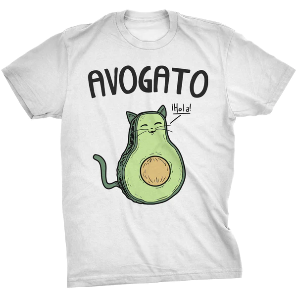

klik hier om uw upload te bevestigen
Eindproject informatica: handschrift herkenning
uitleg
uw gekozen afbeelding:
Kies hieronder wat u wilt invoeren:
bevestigen
resultaat
klik hier om opnieuw te beginnen

{{resultaat}}